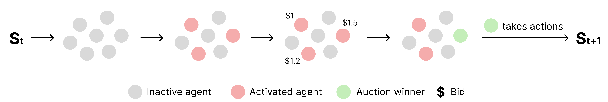
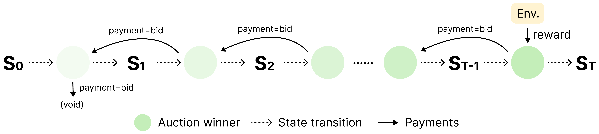
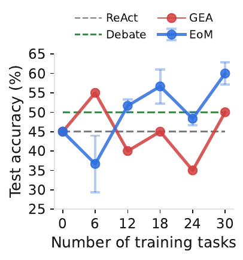
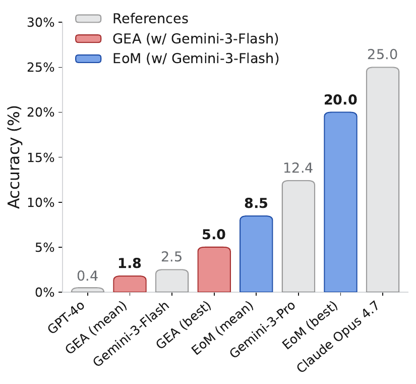
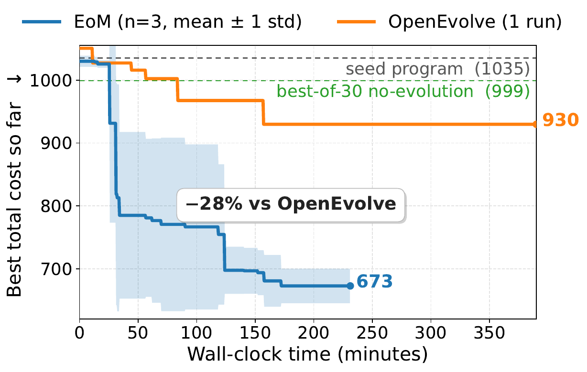
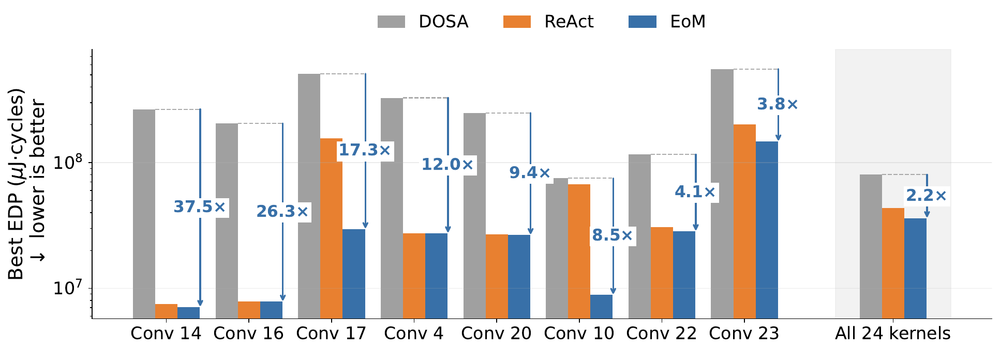
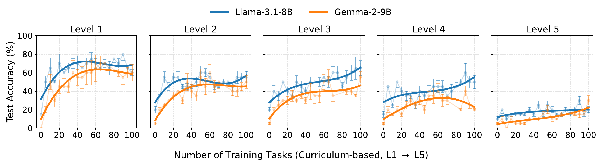
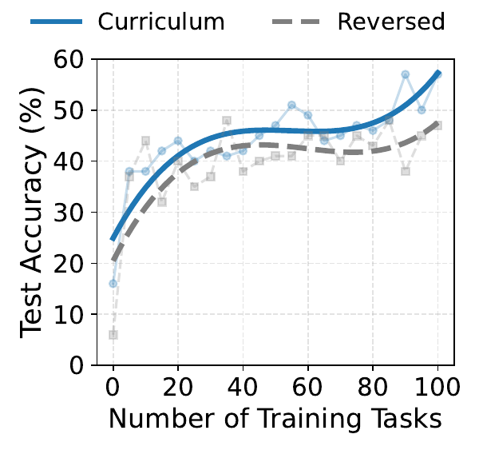
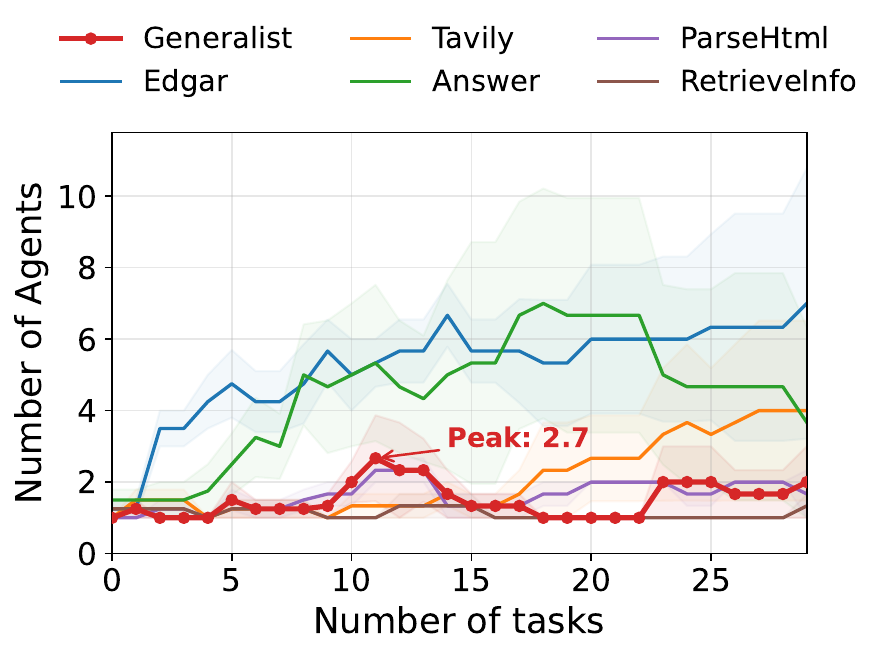

Let a market organize and evolve the agents
Imagine a world with many intelligent agents. Each agent may perform well on certain tasks but remains fundamentally limited: each operates with its own priors, partial observations, and bounded computations.
When faced with more complex tasks that exceed individual capabilities, no single agent can reliably solve problems from start to finish. How, then, can such a population collectively solve these tasks?
The usual fix is a central controller that creates the agents, hands out roles, and routes every decision. But this hurts in two ways. Planning is forced through one gate, so the controller is both a bottleneck and a single point of failure. Moreover, learning and adaptation get harder as the system grows, since the controller must reason about an ever-larger set of agents.
Markets in human society suggest another way. The economist Friedrich Hayek pointed out that no central planner can gather all the knowledge spread across a society. Instead, prices let people coordinate on their own, using only what each can see locally.
To the naive mind that can conceive of order only as the product of deliberate arrangement, it may seem absurd that in complex conditions order, and adaptation to the unknown, can be achieved more effectively by decentralizing decisions and that a division of authority will actually extend the possibility of overall order. Yet that decentralization actually leads to more information being taken into account. Friedrich Hayek, The Fatal Conceit
We give AI agents the same kind of signal. We call it Economy of Minds (EoM), and two simple processes run the society. Planning happens within a task: agents bid in an auction for the right to act, and the winner pays the agent that acted before it. Because a good early move earns the payments that flow back from later winners, this payment chain performs credit assignment on its own, with no central judge. Adaptation happens across tasks: useful agents grow rich while useless ones go broke. Rich agents are copied and tweaked (exploitation), and bankrupt ones are replaced by new variants (exploration). Each agent only decides when to wake up and what to do; there is no manager, no fixed workflow, and no messaging protocol.
Starting from weak agents, the society organizes itself and keeps improving. It matches or beats far stronger single-agent systems on five tasks: math, financial research, scientific research, accelerator design, and distributed-system optimization. Specialization, teamwork, and skill transfer all emerge on their own. The lesson: design the incentives, and the coordination takes care of itself.
Watch the economy evolve
An interactive replay of a real CloudCast run: a population of partial agents bid in auctions, win the right to edit a multi-cloud broadcast program, and are mutated or bankrupted across 30 episodes. Press play, or use the ‹ › controls to step through each beat — bid → win → pay — and watch credit flow backward between agents. Scrub the timeline, click any agent for its prompt, economics, and lineage, or open current program & topology to see what each accepted mutation changed.
The task. CloudCast asks the society to evolve a single Python file, initial_program.py,
that routes a multi-cloud broadcast: given source and destination regions and a network graph of link costs and
throughputs, the program must produce a delivery topology. A simulator scores each program by its total egress
cost across five inter- and intra-cloud scenarios, relative to a single-path Dijkstra seed (~$1035); the reward
is the fractional cost reduction, max(0, 1 − cost/1035). The workspace persists across episodes, so each
episode keeps editing the previous program rather than starting over. Six roles divide the labor — a
Reader inspects files, a Planner proposes the next sub-goal, an Implementer edits the code, a
Builder runs an import/build check, an Evaluator calls the scorer, and a Finalizer finalizes the
program — but nothing fixes which roles act, or in what order: the auction decides at every step, so the workflow
is whatever shape the current code calls for.
An economy of language agents
We model a society of language agents interacting through an economic mechanism. Each agent acts locally, deciding only from its own triggering condition and policy, while global coordination emerges from economic interactions. The system has two coupled processes, and the rest of this section walks through them in turn.
1Planning
Within an episode: agents bid in auctions for the right to act, and transactions pass value backward along the trajectory, assigning credit with no central controller.
2Adaptation
Across episodes: the population evolves by economic selection, where exploration replaces bankrupt agents and exploitation mutates wealthy ones.
Setup. We consider a task environment modeled as a partially observed Markov decision process ℰ = (𝒮, 𝒜, P, r, γ, μ0); at step t the system observes ot ∈ 𝒪. Each agent is a language model parameterized by θ; in our simplified setting a shared frozen backbone serves all agents, with diversity arising entirely through system prompts. An agent is a tuple
where φa : 𝒪 → {0, 1} is a triggering predicate (eligibility), πa : 𝒪 → Δ(𝒜) its action policy, ba a fixed bid, and Wa its current wealth. Both φa and πa are instantiated by the same frozen LLM with agent-specific prompts. This generalizes Baum's Hayek machine from hand-specified condition–action rules to prompted LLM agents.
1 · Planning with auctions and transactions
Within each episode, control is allocated and value is redistributed entirely through local market interactions: an auction decides who acts, and a transaction passes value backward along the trajectory.
1.1 Auctions
At each step, every agent whose wake-up condition fires becomes eligible, and the highest fixed bidder wins the right to act (ties broken randomly). The auction is a decentralized action-selection rule: control goes to whichever agent values acting most in the current context.
1.2 Transactions
After acting, the winner pays its bid to the previous actor and collects any environment reward, following a bucket-brigade rule. Value flows backward along successful trajectories, yielding decentralized credit assignment with no central evaluator.
At each environment step, agents compete for control through an auction (Figure 2). Given observation ot, each agent evaluates its triggering predicate; the eligible set is Et = { a : φa(ot) = 1 }. The winner is the highest-bidding eligible agent, at★ ∈ argmax ba (ties broken randomly). The auction is a decentralized action-selection mechanism: control goes to whoever bids highest in the current context, and the winner samples an action that advances the environment.

The winning action produces the next observation ot+1 and reward rt. With at−1★ the previous winner, we apply a bucket-brigade transfer rule (Figure 3):
The winner pays its bid to the previously active agent while collecting environmental reward; the first winner pays the house. This yields a decentralized form of credit assignment: an agent profits not only by receiving reward directly, but by steering the system into states for which downstream agents pay highly. Value flows backward along successful trajectories: agents enabling productive continuations accumulate wealth, while agents leading into dead ends lose it.

2 · Adaptation with exploration and exploitation
Across episodes, the population evolves through economic selection. A prompt-generation operator 𝒢 proposes new prompts, either amending a failed agent or mutating a successful one. New agents start with wealth W0 ≥ 0; existing agents pay periodic rent ρ.
2.1 Exploration
Agents lose wealth through unhelpful actions or prolonged inactivity; once wealth goes negative they go bankrupt, are removed, and are replaced by complementary variations of bankrupt agents, which lets the system learn from failures, discover new behaviors, and avoid premature convergence.
2.2 Exploitation
Wealthy agents persist and are periodically selected as parents and mutated, reusing and refining successful patterns, biasing the population toward high-performing behaviors and promoting specialization.
Concretely, between episodes the population update has three stages:
- Rent: each agent pays ρ, so Wa ← Wa − ρ;
- Removal: agents with Wa < 0 are deleted;
- Injection: new agents are added via exploration and exploitation up to the size constraints.
Bids are not learned online: each agent receives a frozen bid when introduced. A newly injected novice a′ gets a bid just above the highest competing eligible bid plus a small positive perturbation:
This guarantees the new agent wins its first eligible auction, forcing the system to test it at least once before market selection decides whether it survives. Evolution is governed entirely by economic signals (wealth gain and loss), with no centralized supervision or global performance labels.
Putting the economy to the test
Partial vs. complete agents.
A partial agent is intentionally incomplete: a restricted action space, access to one tool, a short generation budget, a specialized role, or partial observation. A complete agent has the full task interface and attempts the task end-to-end. This lets us test whether economic organization can compensate for, or even outperform, capability concentrated in a single complete agent.
Tasks & baselines.
We instantiate EoM on five domains: math (MATH, easy-to-hard Levels 1–5, planner/executor/verifier capped at ~128 tokens), finance (Finance-Agent-Bench, four tools with each partial agent holding only one), science (FrontierScience-Research, literature/planner/executor/verifier roles), accelerator design (Gemmini suite, 24 ResNet-50 kernels, EDP minimization with Historian/Planner/Executor roles), and distributed systems (CloudCast from ADRS, iteratively improving a program to minimize transfer cost). Baselines include ReAct, GEA, OpenEvolve, Multi-Agent Debate, and the domain-specific DOSA.
Q1. Can economics turn weak individuals into stronger systems?
Across all five domains, economic coordination turns individually partial agents into collective systems that match or surpass complete-agent baselines. On MATH, EoM lifts Llama-3.1-8B from 15.9% to 57.0% and Gemma-2-9B from 4.2% to 45.1%, exceeding the complete agents (51.9% and 44.3%), even though each individual is role-specialized and capped at short outputs. On accelerator design, EoM reduces average EDP to 39.3, versus 43.1 for the same-backbone complete ReAct agent and 80.2 for the domain-specific DOSA baseline (Table 1). The same advantage holds on financial research, scientific research, and distributed-system optimization (Figure 4): EoM reaches 60.0% on Finance-Agent-Bench, 20.0% best-run accuracy on FrontierScience, and a best CloudCast cost of 657.
| Backbone | Partial agents | Complete | |
|---|---|---|---|
| Initial | Trained | ||
| Llama-3.1-8B | 15.9 | 57.0 | 51.9* |
| Gemma-2-9B | 4.2 | 45.1 | 44.3* |
| Method | Avg. EDP ↓ |
|---|---|
| DOSA | 80.2 |
| Complete agent (Gemma-4-31B-it) | 43.1 |
| EoM (Gemma-4-31B-it) | 39.3 |
Table 1. Performance across domains. Left: MATH accuracy comparing constrained populations to complete agents (* officially reported numbers). Right: accelerator-design results by average EDP (lower is better). EoM beats the corresponding baselines in both settings.



Figure 4 · Performance across domains. EoM consistently outperforms baselines, showing the benefit of economic coordination among partial agents.
The advantage is not merely “many agents” over “one agent.” A population of partial agents organized by economic interactions can match or surpass complete agents that have greater individual access to the task interface.
Q2. Beyond multiple agents, what is the role of the economic ingredients?
The gains depend on the economic dynamics that allocate control, transfer value, remove the unproductive, and propagate the successful, not on merely having multiple agents. Weakening these dynamics consistently reduces performance (Table 2). On MATH, the original system is strongest (43.9 mean / 57.0 best); changing rent or rewards lowers it. On Finance, removing exploration causes a large drop (26.0 mean / 40.0 best) and removing exploitation lowers the mean to 33.5. On CloudCast, a best-of-N multi-agent baseline reaches only 999, so repeated multi-agent sampling alone is insufficient.
| Configuration | Mean | Best | |
|---|---|---|---|
| Complete | / | 51.9 | 51.9 |
| Constrained | large rent (×10) | 41.8 | 47.0 |
| small reward (×0.2) | 39.0 | 44.0 | |
| large reward (×4) | 40.9 | 47.0 | |
| original | 43.9 | 57.0 | |
| Configuration | Mean | Best | |
|---|---|---|---|
| Complete | / | 45.0 | 45.0 |
| Constrained | w/o auction | 48.0 | 58.5 |
| w/o exploration | 26.0 | 40.0 | |
| w/o exploitation | 33.5 | 60.0 | |
| full | 52.5 | 65.0 | |
Table 2. Ablations on MATH (left) and Finance (right). Sensitivity to economic parameters and component removal. In both cases, the full / original system achieves the strongest overall results.
Q3. How does the economy improve performance?
What changes inside the society?
EoM improves by reshaping both the population and the agents themselves. On Finance, the trajectory is non-monotonic but improving (45.0 → dip during exploration → 60.0), like a market that first reallocates control and tests alternative specialists before converging. Accelerator design gives a direct view of the mechanism (Figure 5).
Does the society learn reusable structure?
EoM achieves a 2.2× geometric-mean EDP gain over DOSA across all 24 ResNet-50 kernels, with much larger gains on the hardest: 37.5×, 26.3×, 17.3×, and 12.0× on Conv 14, 16, 17, and 4 (Figure 7a). These are the 1×1 convolutions in ResNet-50's bottleneck blocks, for which an output-stationary dataflow is a known effective pattern. EoM is never given this motif (the auction rewards only EDP record-breaks), yet the population repeatedly converges on the same tiling, recovering a transferable hardware/software co-design heuristic that DOSA misses.

Q4. Is the evolving society robust, and does it generalize?
Do behaviors transfer from easy to hard?
Training on an easy-to-hard MATH stream improves not only the easier levels seen earlier but also harder levels initially beyond reach (Figure 6). Both backbones improve on every band, and Level 5 rises from ~10% to ~20%, so local reasoning routines learned on simple problems are recomposed on harder ones.

How sensitive is it to curriculum order?
Comparing the default easy-to-hard curriculum with a reversed hard-to-easy schedule, easy-to-hard stays ahead for most of training and finishes clearly higher (~57% vs. ~47%; Figure 7b). Partial specialists benefit from first mastering reusable local routines before confronting the hardest problems, though the system still improves under the reversed order.
Can a complete generalist monopolize the economy?
Adding a generalist with access to all tools alongside the partial specialists does not collapse the society. The generalist briefly expands around tasks 11–12, then contracts back to a single agent, while specialist populations (Edgar, Tavily) keep growing to ~5–8 agents (Figure 7c). The economy rewards local value: a specialist tuned to a narrow subproblem outcompetes a generalist whose prompt budget is spread thin.


Cite this work
@misc{qi2026economymindsemergingmultiagent, title={Economy of Minds: Emerging Multi-Agent Intelligence with Economic Interactions}, author={Zhenting Qi and Huangyuan Su and Ao Qu and Chenyu Wang and Yu Yao and Han Zheng and Kushal Chattopadhyay and Guowei Xu and Zihan Wang and Weirui Ye and Vijay Janapa Reddi and Ju Li and Paul Pu Liang and Himabindu Lakkaraju and Sham Kakade and Yilun Du}, year={2026}, eprint={2606.02859}, archivePrefix={arXiv}, primaryClass={cs.CL}, url={https://arxiv.org/abs/2606.02859}, }